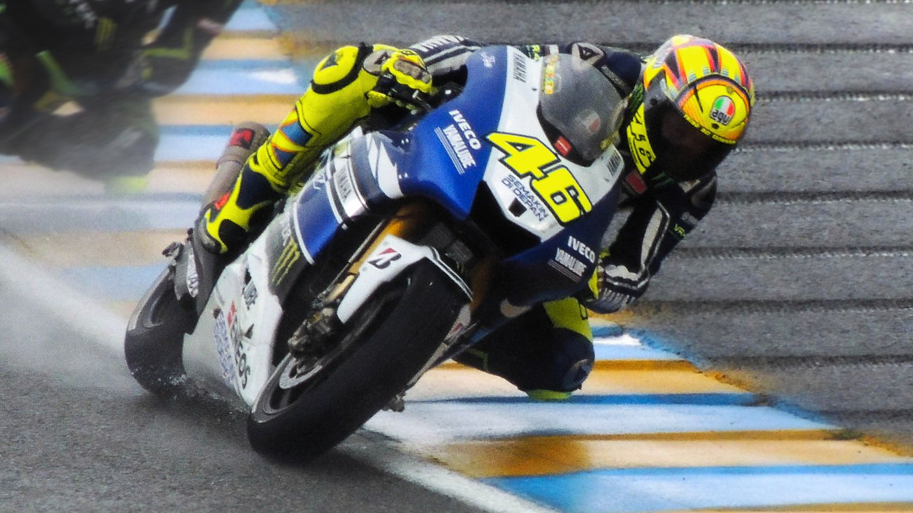

Cornering Aerodynamics of a MotoGP-Style Motorcycle
Final-year group design project at the University of Southampton, combining CFD with wind tunnel testing. I am the team leader, the aerodynamic design lead, and the lead for CAD development and manufacture of the test model.

Background
Motorcycle aerodynamic development is generally carried out with the machine upright and travelling in a straight line, as this is the most straightforward condition to model computationally and to reproduce in a wind tunnel. A racing motorcycle spends a substantial proportion of each lap at significant lean angles.
Under lean the flow field is no longer symmetric, the frontal area presented to the oncoming air changes, and the aerodynamic forces and moments acting on the machine change accordingly. Cornering is therefore both a more demanding case to analyse and the condition in which aerodynamic behaviour has the greatest influence on the rider. This project investigates that regime using computational and experimental methods together, so that each can be assessed against the other.
My responsibilities
- Team leader. Coordinating the group, setting the programme of work, and liaising with our supervisors, Dr David Marshall and Dr Renan Soares.
- Aerodynamic design lead. Responsible for the aerodynamic direction of the project across both the CFD and the wind tunnel work.
- CAD development and manufacturing lead. Responsible for the CAD model and for the manufacture of the wind tunnel test model.
What the project is looking at
The starting question is straightforward to state and awkward to answer: how do the aerodynamic forces and moments on a racing motorcycle change as it leans, and what does that mean for the machine and the rider?
Under lean, several things happen at once. The flow field loses its symmetry about the centreline. The frontal area presented to the oncoming air changes. The wake behind the machine is displaced laterally rather than sitting squarely behind it. Any aerodynamic surface tuned for the upright case is now operating at an effective sideslip it was never designed for. The quantities the project is set up to resolve are therefore not just drag and downforce, but the side force and the yaw and roll moments that appear once the symmetry is gone, and how all of these vary across a range of lean angles.
That matters because a motorcycle is a balance problem before it is a performance problem. Aerodynamic loads that would be a minor bookkeeping exercise on a car act on a machine that the rider is actively balancing, and at the point in the lap where the tyres have the least margin left.
How the work is structured
- Geometry and CAD. Defining a representative MotoGP-style machine, in a form that is both meshable for CFD and manufacturable as a physical test model.
- CFD. Sweeping lean angle and flow conditions computationally, where the cost of an extra case is machine time rather than tunnel time.
- Wind tunnel model and mounting. Building the physical model and the arrangement that holds it at lean in the working section without the support dominating the measurement.
- Testing. Measuring forces and moments across the lean range.
- Correlation. Comparing prediction against measurement, and resolving the disagreements.
Approach
The project runs two parallel strands. CFD provides full-field information and allows conditions to be swept at low cost. Wind tunnel testing provides physical measurements on a real model, with the experimental uncertainty that entails. The value lies in the correlation between them: where the two disagree, the discrepancy identifies a deficiency in the model, the mesh, the test setup or the underlying assumptions, and resolving that is a significant part of the engineering work.
Taking responsibility for manufacturing the test model alongside the CAD is a deliberate decision. Geometry that is straightforward to model is not always straightforward to manufacture, mount or instrument in a tunnel, and holding both roles keeps those constraints in view from the outset rather than allowing them to emerge late in the programme.
Relevant skills
- Leading a technical team on an open-ended problem with no predetermined outcome.
- Working across the full aerodynamic development process: geometry definition, CFD, physical model, wind tunnel testing, and correlation between prediction and measurement.
- Designing for manufacture and for test, alongside designing for analysis.